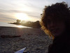
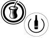
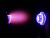
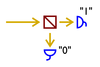
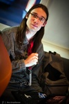
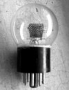
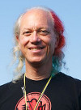
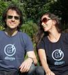

The conference has only one lecture track taking place in the HE101 room of TU Berlin, a modern auditorium with a seated capacity of several hundred. There are occasional hands-on workshops taking place simultaneously in a smaller room for maximum 10-20 people. In the hall in front of the HE101, you will find tables for exhibitors and chilling out.
Friday Dec 28th
| 09:00 - 10:00 | Registration, coffee and exhibition set-up | |
| 10:00 - 10:30 | EHSM team - Welcome | |
| 10:30 - 11:45 |  | Bionerd23 - Radioactivity is in the air for you and me An anonymous woman who goes by the handle of "bionerd23" will give you a very comprehensive, bottom-up view of man-made and natural nuclear radiation and how you can detect it. Mind you - when we say "comprehensive", this means things like building yourself ion chambers for detecting radiation, and studying and operating a small-scale homemade fusion reactor. Have a look at her excellent videos. |
| 11:45 - 13:00 |  | Keynote Speech: Will Jack - "I built myself a nuclear fusion reactor when I was 16" Will Jack is a 17 year old high school student from the US who enjoys nothing more than building nuclear fusion reactors in his basement. He will present his work on the Inertial Electrostatic Confinement (IEC) fusion reactors that he has built, speaking not only about the theory behind them, but how he developed them, his current work, and his goals for the future as well. This keynote speech is not about cloud computing. |
| 13:00 - 14:00 | Break | |
| 14:00 - 17:30 | | WORKSHOP: Bionerd23 - How to hack a peanut can into a radiation detector Drop in at any time to build your radiation detector from a peanut can! Quick, easy and suitable for kids, material costs 5€. |
| 14:00 - 17:30 |  | WORKSHOP: Jeffrey Gough - Jewellery Learn to make a silver ring from scratch! Tools and a choice of materials will be provided. You'll learn silver soldering (this is much more exciting than electronics soldering), cutting, filing, shaping and polishing techniques. If you'd like to make a ring for somebody else, please try to measure their finger, or bring it with you! There will be a cost of 20 euro per person to cover materials so you can take your creation home with you. There are five spaces available in the workshop, but hopefully there will be enough time to squeeze two sessions into the slot. Each session should take 60-90 mins. Register at the conference cash desk. |
| 14:00 - 15:00 |  | Fabricio do Canto, Krithika do Canto and Uwe Lübbermann - Metamate and Premium Cola Mier is an open "source" and CC-licensed beverage made of yerba mate fermented in a beer-like process. The producer Meta Mate tries to work following the operational system of Premium Cola. Premium is a little older, more than 11 years right now. They are a small drinks producer at first glance, but at a second, they redefine how to run a sustainable business with open source ethics. For example, we let every stakeholder co-decide on every issue, offer anti-volume-discounts instead of volume discounts (among 48 more modules) and publish them all unter a free CC license online for anybody to copy, remix and share further. How on earth can it be possible to run a company like this? We'll explain at EHSM. |
| 15:00 - 16:15 |  | Sylvain Radix and David Rochelet - DIY Vacuum Engineering @ Electrolab The purpose of this project is to build a high-end vacuum system as a base for various purpose like thin film deposition (thermal evaporation, CVD, PeCVD, MoCVD, ...), plasma etching, linear particle accelerator, electron beam microscope, electron beam welding, molecular beam epitaxy, ... The talk will briefly present the Electrolab hackerspace and all the fancy equipment we have to work on our projects. We will then present the vacuum chamber we are building from scratch using raw materials and a few hacked devices. We will describe the process used to build our own high vacuum flanges, the required skills needed to complete this project and the main difficulties we have been experiencing this year. To illustrate this talk, we will give some examples of particular technology needed for this project such as stainless steel machining, TIG welding or electro polishing which is quite more complicated than expected. Through our successes and our failures, you will discover the story of this quite unique home-made vacuum chamber. |
| 16:15 - 17:30 |  | Ilja Gerhardt - How to throw dice with quantum mechanics Ilja will introduce the basics on randomness and recent results in the generation of true random numbers. Further, he will introduce a cheap and easy device which generates true random numbers from an intrinsic randomness source. This so-called "quantum random number generator" (QRNG) has distinct properties and he will introduce some mathematical implications on random numbers in its implementation and characterization. |
| 17:30 - 18:00 |  | Evangelia Gousiou - Open Hardware at CERN Evangelia Gousiou will tell you about the Open Hardware Initiative at CERN, covering various aspects, such as the Open Hardware Repository, the CERN Open Hardware Licence, the commercial paradigm used in collaborating with companies and current efforts to boost FOSS tools for hardware development. |
| 18:00 - 19:15 | Jeffrey Gough - Hacking and craft It's getting increasingly easy to get our hands on advanced materials and manufacturing technology. Laser cutters and 3D printers, once expensive and arcane, will soon be in high street shops next to the laptops, phones and breakfast cereal. We geeks find it easy to look to the future, but age old hand craft techniques can often be far more powerful. In his work Jeffrey uses high- and low-tech in harmony. He will talk about a few of his projects focusing particularly on metalworking techniques; turning, milling, casting, welding, brazing, anodizing etc, but with digressions into electronics, adhesives, plastics and more. Before the talk, he'll be running a hands-on jewellery workshop. Learn to make your own silver ring and take it home with you! | |
| 19:15 - 19:45 |  | Nadania Idriss - Berlin Glas Nadania Idriss is a California transplant who founded Berlin Glas e.V. in 2009. The studio is the first in Berlin to offer hot glass for artists and the general public. Check out her short presentation to learn how you too can work with this material! (glass blowing etc.) |
{kind=link}
Saturday Dec 29th
| 09:00 - 10:00 | Registration and coffee | |
| 10:00 - 11:15 |  | Ben Krasnow - Homebuilt X-ray backscatter imaging system (airport body scanner) Ben Krasnow, "Hacker Extraordinaire" at video game company Valve, built an X-ray backscatter imaging system from parts found on eBay. This system works by scanning a very thin beam of X-rays across the target, and measures the amount of backscatter for a given beam position. The beam is scanned mechanically by a rotating chopper (collimator) wheel, and by tilting the rotating wheel on an orthogonal axis. The output image is generated on an oscilloscope by matching the horizontal scan speed to the rotating wheel, and using a potentiometer to measure the vertical axis position. The scope's brightness (z axis) is controlled by the amount of backscatter signal received by a large-area detector. Thus, the image is constructed bit by bit. He might also talk about Raman spectroscopy and other hacks, stay tuned. |
| 11:15 - 11:45 | | Evangelia Gousiou - White Rabbit White Rabbit is an open hardware fully deterministic Ethernet-based network for general purpose data transfer and synchronization. The aim is to be able to synchronize over 1000 nodes with sub-nanosecond accuracy over fiber lengths of up to 10 km. The project is led by CERN - where Evangelia works - and is a good example of open hardware collaboration between several large scientific institutions and companies. |
| 11:45 - 13:00 |  | Adrien Lelong - Wire characterization from one single electrical connection Wire diagnosis aims at detect and locate faults in wires, measure their length, check their health or simply characterize them. This can be achieved electrically with only one connection point to the wire using reflectometry methods. This involves various hardware platforms and signal processing sometimes similar to those used in radar systems. The measurement platform can either be made around a microcontroller or an FPGA and needs one analog high frequency input/output. Adrien has worked on these issues in the context of real time cable monitoring in vehicles. He will talk about main parts of a reflectometry system for wires and its principle. Demos will be performed during the talk. |
| 13:00 - 14:00 | Break | |
| 14:00 - 18:00 |  | WORKSHOP: Tomek Ness and Steffen Fiedler - Origatronica with Arduino for kids and other beginners Origatronica is a cardboard folding technique to easily frame and wrap your Arduino project. The workshop will be a introduction to Arduino and simple electronics, like buttons and LEDs. Futhermore, we will show some example of Origatronica and bring some cardboard so we can try and play around a little. The workshop is presented by Tomek Ness and Steffen Fiedler from the Berlin-based studio nand. Origatronica is a project by Björn Wahlström. |
| 14:00 - 15:00 |  | Pierre Pronchery - Touch your NetBSD Earlier this year, the AFUL, a French non-profit organization ran a contest called AFULTab, challenging developers to propose a FOSS tablet environment with the hardware of their choice. NetBSD enthusiast and DeforaOS developer Pierre Pronchery prepared and submitted his own proposal on May 1st, co-winning the contest while also becoming an official NetBSD developer in the process. This talk will summarize the work done, the status and the potential future of NetBSD and the DeforaOS desktop environment on such tablet hardware. |
| 15:00 - 16:15 |  | John McMaster - Epoxy to schematic: leaving the cubicle and entering the lab siliconpr0n.org hosts a wealth of information on integrated circuit (IC) reverse engineering (RE) techniques as well as specific chip info. This talk explores the site's resources by going through the process of removing an IC from a circuit board to creating a schematic. While most hardware RE talks focus on results from analyzing a specific system, this instead focuses on techniques to enable others to learn more about the art. |
| 16:15 - 17:30 |  | Shawn Tan - DIY microprocessor design Microprocessor companies have teams of engineers working on microprocessor designs. However, if you are an individual who wants to design and experiment with your own microprocessor, you can. This talk will introduce general microprocessor architecture design and some specific techniques with examples from an actual microprocessor core implementation. The focus will be on how an individual can go from a conceptual microprocessor to a real implementation in about a week. |
| 17:30 - 18:00 |  | Yann Guidon - YASEP Imagine the Arduino project where you can code and debug your application in your web browser without Java, but you can also configure and tweak the CPU, a homebrew 16/32 bits free architecture... |
| 18:00 - 19:45 | WORKSHOP: YASEP demo and hacking | |
| 18:00 - 18:30 |  | Sébastien Bourdeauducq - Migen Migen is a Python-based toolbox that aims at automating further the FPGA and VLSI design process. Migen makes it possible to apply modern software concepts such as object-oriented programming and metaprogramming to design hardware. This results in more elegant and easily maintained designs. Migen also provides tools to build synchronous designs more productively by automating tasks like resetting registers and abstracting away the event-driven paradigm of HDLs, integrate system-on-chips, for example by automatically interconnecting on-chip buses such as Wishbone, design hardware accelerators in the dataflow paradigm with semi-automatic integration in a SoC, and more. Migen will become the foundation for the next-generation Milkymist SoC, and is also used in the Rhino software-defined radio platform. |
| 18:30 - 19:45 |  | Dmitriy Kostiuk - evolution of the mobile OS interfaces Dmitriy Kostiuk, associate professor at the Computers & Systems department of Brest State Technical University (Belarus) and co-organizer of the Linux Vacation Eastern Europe will present the evolution of the mobile OS interfaces in a free/libre software context. The presentation is dedicated to the history of the mobile devices' GUI, from the earliest PDA concepts to modern touch-oriented smartphones and tablets. Special attention is paid to open source and FLOSS-based mobile OS and shells, along with the increase of free/libre software usage in this segment. |
Sunday Dec 30th
| 09:00 - 10:00 | Registration and coffee | |
| 10:00 - 11:15 | Carsten Wartmann and Kai Kostack - Blender Carsten Wartmann will outline the history and current development of Blender which is a key to understand why Blender is so powerful but somehow also "different". Kai Kostack will present the software from a more practical perspective: working with basic shapes, polygon modeling as well as subdivision modeling. Then he will show how to create simple materials and lighting to produce an appealing final render. After that they will answer questions about Blender, preferably by using Blender. | |
| 11:15 - 13:15 | WORKSHOP: Carsten Wartmann and Kai Kostack - Using Blender to create renderings of your future hardware products If you are planning to pitch your future open hardware product for crowdfunding or preorder, take this workshop to learn the basics of using Blender to create a compelling rendering of what it will look like. Please bring your own laptop, preferably with Blender installed. | |
| 11:15 - 12:30 | Benjamin Heidersberger - Van Gogh TV 20 years ago, a breakthrough media experiment took place on the art exhibition documenta IX in Kassel/Germany. For 100 days the audience controlled the content of TV-broadcasts on ZDF/3sat by using telephone and computer. The Ponton European Media Art Lab around Karel Dudesek, Benjamin Heidersberger, Mike Hentz and Salvatore Vanasco had developed 15 different interactive formats which were tried out live by the audience. Even before the start of the world wide web, questions of multimediality, interactivity, public and private sphere, copyright, virtual communities and marketplaces, media convergence and media society were researched in an experiment. Mass phenomena like Facebook were anticipated in the sense of the Brecht radio theory (to change the receiver into a sender). Many good hacks were involved. Benjamin Heidersberger will show a video of Piazza virtuale and give some insight into the experiment from today's view. | |
| 12:30 - 13:15 |  | Aleksander Zawada - DIY triodes and other vacuum tubes Aleksander runs "Prywatna Wytwórnia Lamp" (PWL), a one-man DIY vacuum tube laboratory in Warsaw. The name translates to "Private Tube Manufacturer" - a pun on PWLR ("National Tube Manufacturer"), the first Polish tube manufacturer after WWII. There, he makes not only triodes, but also canal ray tubes, a RGB magic eye, several Crookes tubes, Geiger tubes, and many other incredibly amazing devices. This is serious stuff - he starts with raw materials like glass, metal and phosphor powders. At the end of the talk, he will also quickly present his DIY electron beam welder. |
| 13:15 - 14:00 | Break | |
| 14:00 - 18:00 |  | WORKSHOP: Mitch Altman - Intro to soldering for kids of all ages Anyone can learn to solder and make cool things with electronics! Mitch Altman has taught over 40,000 people to solder, and will be teaching kids of all ages this useful and fun skill at EHSM. Mitch makes it easy, enjoyable, and inspiring to learn! Everyone will be making one "pixel" of an interactive multi-colored blinky-light art project called Trippy RGB Waves, which is an open source kit designed specifically for people who've never made anything at all to be able to complete successfully. Each "pixel" is cool by itself, but put a bunch together, wave your hand over them, and watch trippy and beautiful waves of colors! And afterwards, you can take your colored blinky-light "pixel" home with you to show off to your friends. Fun for all ages. Minors (-18) get into EHSM for free, kits cost 10€. |
| 14:00 - 14:30 |  | Daniela Schiffer and Markus Schulz - The story of Changers They will present their startup Changers, the solar charger they have developed and the vision behind what they are doing. Imagine what would happen if every single one of us could produce their own energy and by that creating a currency. Even though Changers' particular business model is not compatible with open source, their story is an inspiring example of how persistence and willingness to leave the beaten path can lead to the successful design and production of consumer electronics in a startup environment. |
| 14:30 - 15:45 | Kaspar Emanuel - The AlphaSphere and Open Innovation The AlphaSphere is a visually striking, spherical and tactile interface for music performance and production developed by nu desine. After a short demo and run through of the features and the technology behind it, Kaspar will present the common sense approach to open innovation adopted for its development. The talk will include the considerations, benefits and pitfalls of this approach as well as glimpses of the story of a young start-up formed around bringing a hardware product to market. | |
| 15:45 - 17:00 |  | Harald Welte - Osmocom Harald Welte will present the Osmocom project he founded. In particular, there will be OsmocomBB, a free software GSM stack evolved enough to actually make phone calls and send SMS (plus all the possible explorations of the GSM system), and OsmoSDR, a small-size, low-cost software defined radio device. |
| 17:00 - 18:15 | Stefan Sydow and Sebastian Koch - Software Defined Radio with DVB-T USB Devices and Aircraft Transponder Reception The talk will explain some basic concepts regarding Software Defined Radio and illustrate them with examples like AM and FM reception. As special application ADS-B (aircraft transponder) reception will be presented. Depending on the available time and the interest of the audience we will go into the depth of ADS-B decoding and the history of aircraft radio transponders. The authors host Metafly which makes heavy use of SDR for transponder decoding. | |
| 18:15 - 19:30 |  | Jasper Nance - Microsecond High Speed Photography and Scanning Electron Microscope She will present these projects from the perspective of using community resources, specifically those from Heatsync Labs, Arizona's first hackerspace. This includes materials, people, expertise, and crowdsourcing to scrounge and hack together technologically challenging endeavours. The projects are not an end in themselves, but rather serve as hackable platforms for both community and educational outreach to teach skills and develop new and hackable ways of doing difficult and expensive tasks. For a quick glimpse at Jasper's projects, be sure to check her impressive photo portfolio. |
| 19:30 - 20:00 | EHSM team - EOF |
Exhibitors
Want to exhibit? Mail orga at ehsm.eu. Do not forget to state your technical requirements (power, area, etc.).